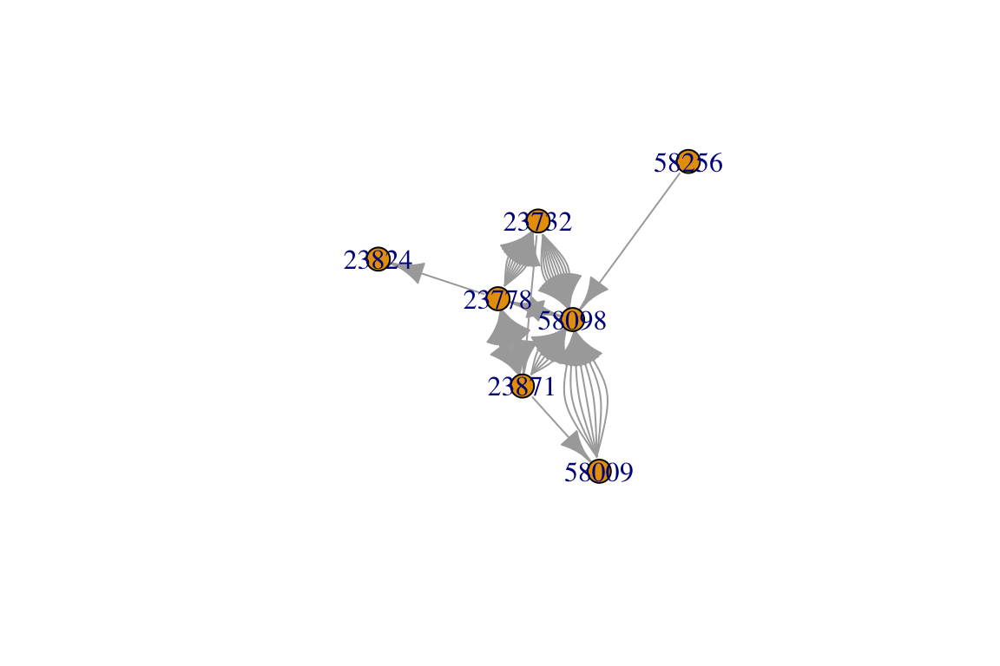
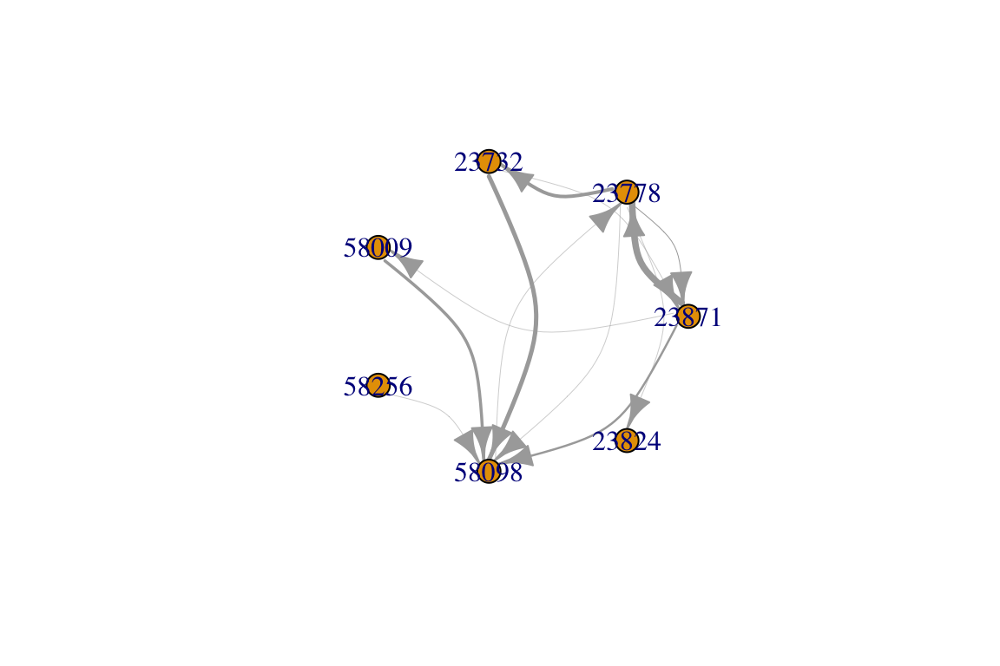

Intro to Animal Social Networks
Dai Shizuka
updated 06/14/19
Animals interact and associate. These interactions and associations can build up to social relations between individuals in a population. Social structure refers to the global description of these social relations (Hinde 1976). Social network analysis can be used as a method to quantify the structure and dynamics of animal societies. There has been an explosion of empirical studies (and review articles) on the topic since the early 2000s.
As mentioned in the survey of network types, social networks describe the dynamics of social interactions and associations (edges) between individuals (nodes). However, there are potential bananaskins to look out for when constructing social networks. The most important question here (and whenever you are making networks in general) is: what are your edges?
Constructing networks from interactions
Constructing networks from interactions is conceptually straightforward.
Here is a sample data set of dominance interactions between pairs of individuals. Each individual has a 5 digit id number. The data is organized as a two-column matrix with winner on the first column and loser on the second column:
library(igraph)
idat=read.csv("https://dshizuka.github.io/networkanalysis/SampleData/Sample_interactions.csv")
head(idat)## Winner Loser
## 1 23871 23778
## 2 23871 58098
## 3 23778 23824
## 4 23732 58098
## 5 23871 23778
## 6 23778 23732Let’s make this into a directed network, with arrows going from winner to loser:
ig=graph_from_data_frame(idat, directed=T)
plot(ig)
You’ll notice that this network has some pairs of individuals that have multiple edges connecting them. This is because the same pair of individuals interact multiple times in this dataset.
Perhaps you want to combine these ‘multiedges’ into weighted edges. That is, each pair of individuals will be connected by one edge, but the number of interactions will be represented by the edge widths. There are a few different ways to do this. Here’s one:
E(ig)$weight=1 #make all edge weights = 1
ig2=simplify(ig, remove.multiple=T, edge.attr.comb=list(weight=sum))
plot(ig2, edge.width=E(ig2)$weight)
Since this is a directed network, it may be good to have curved edges so we can detect instances where arrows go both ways. We will also arrange the nodes in a circle so we can see the patterns of edges a bit better.
plot(ig2, edge.width=E(ig2)$weight/4, edge.curved=T, layout=layout_in_circle(ig2))
Constructing networks from associations
Association networks are created by connecting nodes that belong to the same ‘group’. For example, individuals that belong to the same club may be considered to be ‘associates’ and therefore connected in a network. Similarly, in animal social networks, individuals that are observed to be in the same flock or herd may be considered to be associated in some way. Keep in mind though that this is an assumption, and the inference of social networks from patterns of group association is often called the ‘gambit of the group’ (Franks et al. 2010).
Typically, association data would be first be gathered as an individual-by-group matrix (or group-by-individual matrix). That is, individuals are listed in rows and groups (e.g., flocks/herds/schools) listed in columns (or vice-versa). The cell value is 1 if that individual is in that group, and 0 if not.
Sample individual-by-group matrix
Let’s play with a sample dataset (Sample_association.csv), which is a snippet of real data from a study on Golden-crowned Sparrows. My colleagues and I collected some data on which individually-marked sparrow was observed together in flocks (typically 2-10 birds), defined as a collection of individuals within a 5m radius during a given observation (Shizuka et al. 2014). Flock membership changes within minutes—some birds leave and other birds join. Here, each individual is presented in the rows, and each flock is presented in columns (‘individual-by-group matrix’). The cell value is 1 if that individual was seen in that flock, and 0 if not.. Let’s take a look at a slice of the data (output not shown):
assoc=as.matrix(read.csv("https://dshizuka.github.io/networkanalysis/SampleData/Sample_association.csv", header=T, row.names=1))
assoc## flock_6 flock_7 flock_8 flock_10 flock_11 flock_12 flock_13 flock_14
## 23820 1 0 0 0 0 0 1 0
## 23726 1 0 0 0 0 0 1 0
## 23831 1 0 0 0 0 0 1 0
## 23763 1 0 0 0 0 0 1 0
## 23772 0 1 1 0 0 0 0 0
## 23770 0 1 0 0 0 0 0 0
## 23771 0 1 0 0 0 0 0 0
## 23777 0 1 0 1 1 0 0 1
## 23774 0 1 0 1 0 0 0 1
## 23860 0 0 1 0 0 1 0 0
## 23779 0 0 0 1 0 0 0 0
## 23773 0 0 0 1 1 0 0 1
## 23862 0 0 0 1 1 0 0 0
## 23857 0 0 0 0 0 1 0 0
## 23871 0 0 0 0 0 1 0 0
## 23853 0 0 0 0 0 0 1 0
## 23732 0 0 0 0 0 0 0 0
## 23734 0 0 0 0 0 0 0 0
## 23756 0 0 0 0 0 0 0 0
## 23759 0 0 0 0 0 0 0 0
## 23768 0 0 0 0 0 0 0 0
## 23758 0 0 0 0 0 0 0 0
## 23781 0 0 0 0 0 0 0 0
## 23815 0 0 0 0 0 0 0 0
## 23809 0 0 0 0 0 0 0 0
## flock_15 flock_16 flock_17 flock_20 flock_24 flock_25 flock_26
## 23820 0 0 0 0 1 0 0
## 23726 0 0 0 0 1 0 0
## 23831 0 0 0 0 1 0 0
## 23763 0 0 0 0 1 0 0
## 23772 0 0 1 0 0 0 0
## 23770 0 0 0 0 0 0 1
## 23771 0 0 0 1 0 0 0
## 23777 0 0 0 0 0 0 0
## 23774 0 1 0 0 0 0 0
## 23860 1 0 0 0 0 0 1
## 23779 0 0 0 0 0 0 0
## 23773 1 1 0 1 0 0 0
## 23862 1 1 0 1 0 0 0
## 23857 0 0 0 0 0 0 0
## 23871 0 0 0 0 0 1 0
## 23853 0 0 0 0 0 0 0
## 23732 0 1 0 0 0 0 0
## 23734 0 0 1 0 0 0 0
## 23756 0 0 0 1 0 0 0
## 23759 0 0 0 1 0 0 0
## 23768 0 0 0 1 0 0 0
## 23758 0 0 0 1 0 1 0
## 23781 0 0 0 0 0 0 1
## 23815 0 0 0 0 0 0 1
## 23809 0 0 0 0 0 0 1Using an association index However, note that in this type of data, the probability that we draw a connection between any two nodes is partially dependent on how often we saw each individual. For example, if two individuals are simply observed more often, they are more likely to be observed together. Conversely, if an individual is rarely seen, it is likely to be seen only with a small subset of other individuals. We may like to take this into account. One popular solution to this is to define network edges based on an ‘association index’ that accounts for the frequency of observation of each node. One simple association index is called the Simple Ratio Index (Cairns & Schwager 1987; this is the same as the Jaccard Index).
Association Index = \(\displaystyle \frac{|A \cap B|}{|A \cup B|}\) = \(\displaystyle \frac{|A \cap B|}{|A|+|B|-|A \cap B|}\)
where
- \(|A \cap B|\) is the number of times A and B were seen together
- \(|A|\) is the total number of times A was seen (together or separate from B)
- \(|B|\) is the total number of times B was seen (together or separate from A)